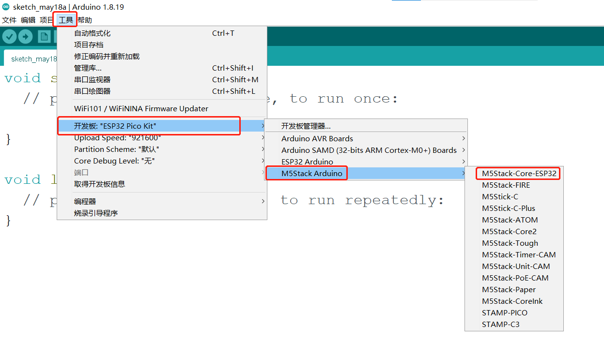
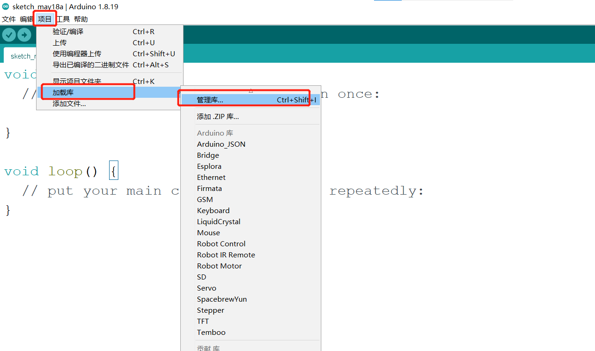
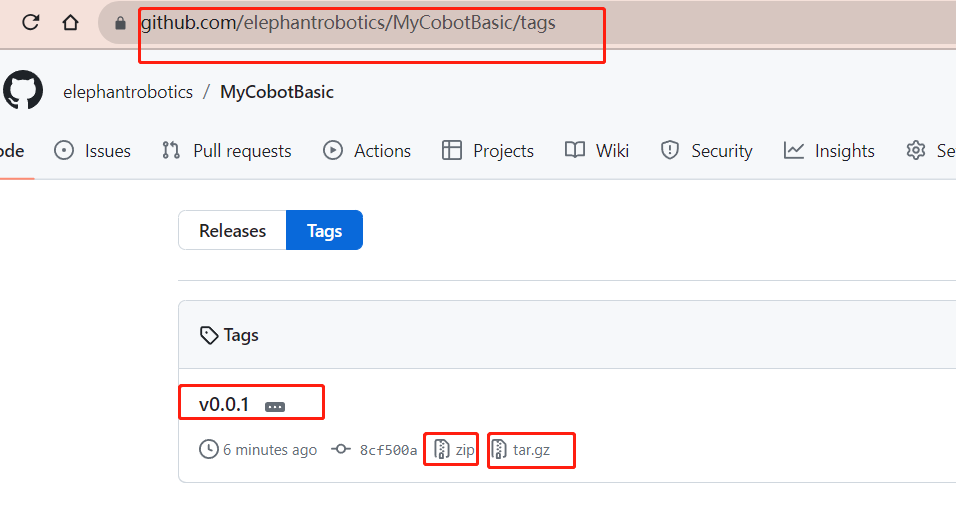
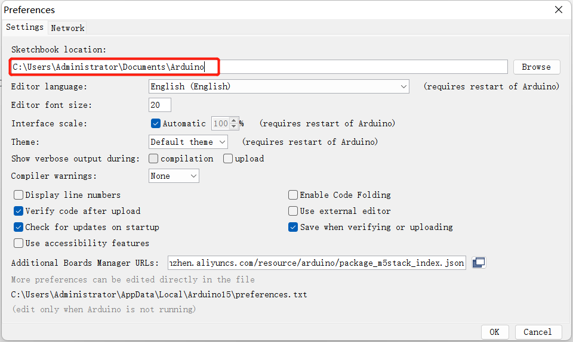
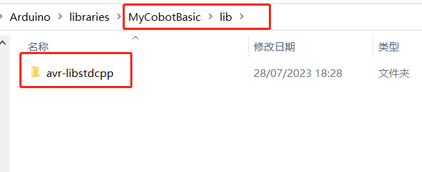
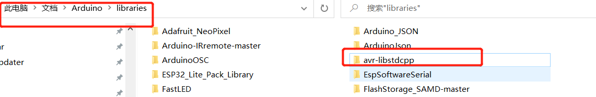
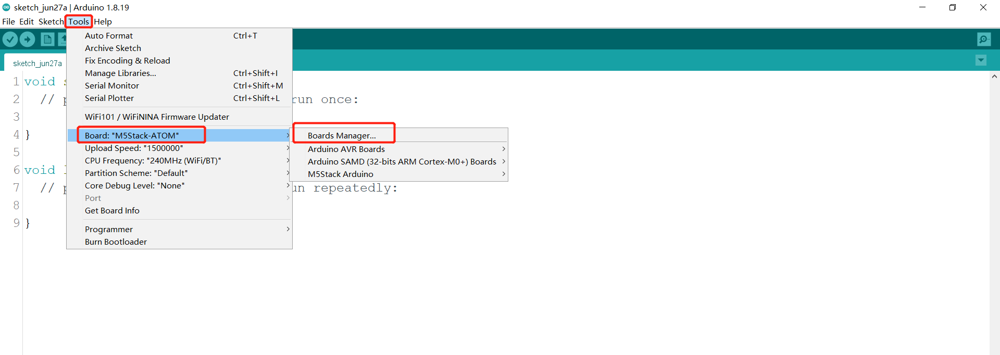

Arduino environment setup
Arduino IDE download

Download Arduino IDE You can click Arduino official website to download and install the version corresponding to the computer system.
Install the driver
Before burning the program, users of M5Core host (including BASIC/GRAY/M5GO/FIRE/FACES)/ microcontroller devices please click the button below to download the corresponding CP210X driver package according to your operating system. After decompressing the package, select the installation package corresponding to the operating system bit number to install.
For Mac OS, before installing, make sure System Preferences-->Security & Privacy-->General and allow CP2104 drivers to be downloaded from the App Store and approved developers
After unzipping the compressed package, select the corresponding installation package according to the operating system of the computer for installation (select x64 or x86 for win10 and win11).

CP34X
-
Add development board
Open Arduino IDE, select File --> Preferences --> Settings, add the URL below to the additional development board manager https://m5stack.oss-cn-shenzhen.aliyuncs.com/resource/arduino/package_m5stack_index.json


After adding, select Tools --> Development Edition --> Development Board Manager, enter and search M5Stack in the new pop-up dialog box, and click Install (if the search fails, you can try restarting the Arduino program; if an error occurs during downloading, click Install again), as shown below:

After adding, select Tools --> Development Board , check if it is successful, as shown below:

Add related libraries
4.1 Install M5Stack library
Tools --> Development Board --> M5Stack Arduino Select M5Stack-Core-ESP32, as shown below:
Project --> Load Library --> Manage Library Enter M5Stack in the search box, as shown in the following figure:
Click Install after finding it, scroll down, M5Stack is at the back, and you can see the location of the drop-down slider in the picture, as shown in the following figure:

4.2 Install MyCobotBasic library
Note: Please download the latest library, the first version is v0.0.1.
- Click to download related dependency libraries
MycobotBasic(After importing the Mycobot280-Arduino model, you can refer to arduino_use for use). Please see the figure below for details. .zip is suitable for Windows system, and .tar.gz is suitable for Linux system:
Dependent library installation instructions
First check the location of the Arduino project folder. You can view it by clicking File --> Preferences (you can copy the path to the hard disk path to find the libraries folder)



1 Copy the path here and press enter to find the libraries folder
Unzip to the corresponding folder libraries directory. If you are using Arduino, please do not overwrite, just add it to the existing Library.

At this point, congratulations, you have built the Arduino related development environment.
Note: For Arduino environment configuration and case compilation, you can watch our video on Bilibili (https://www.bilibili.com/video/BV1Vi4y1c7DQ/).
Use of Arduino library
Supported robot arm type: myCobot280-Arduino
Use case: For example, open C:\Users\User\Documents\Arduino\libraries\MyCobotBasic\examples\MyCobot280\MyCobot280_Arduino\Mega\AnglesControl\AnglesControl.ino. This case requires burning the development board first and then connecting it to the robot arm, otherwise the upload will fail.
Using the basic library at the bottom, you can freely develop under Arduino and control our company's robot arm.
1 Modifications before compiling
Import library files. If your robot arm is myCobot280-Arduino, please check whether the development board is Mega2560 or Uno. If it is:
1.1 Please put MyCobotBasic\lib\avr-libstdcpp under C:\Users\User\Documents\Arduino\libraries:


2 Select the development board before compiling
2.1 The development board is Uno or Mega2560, Tools --> Development Board --> Arduino AVR Boards --> Arduino Uno (or Arduino MEAG or Mega2560), see the following figure for details:

1 When using uno,select
2 When using Mega2560, select
2.2 The development board is mkr wifi1010
Search for samd in the development board manager. If it is not installed, install it. First, Tools --> Development Board --> Development Board Manager, then search for samd, see the following figure for details:


Development board selects mkr wifi1010, tools --> development board --> Arduino SAMD --> Arduino MKR WiFi1010